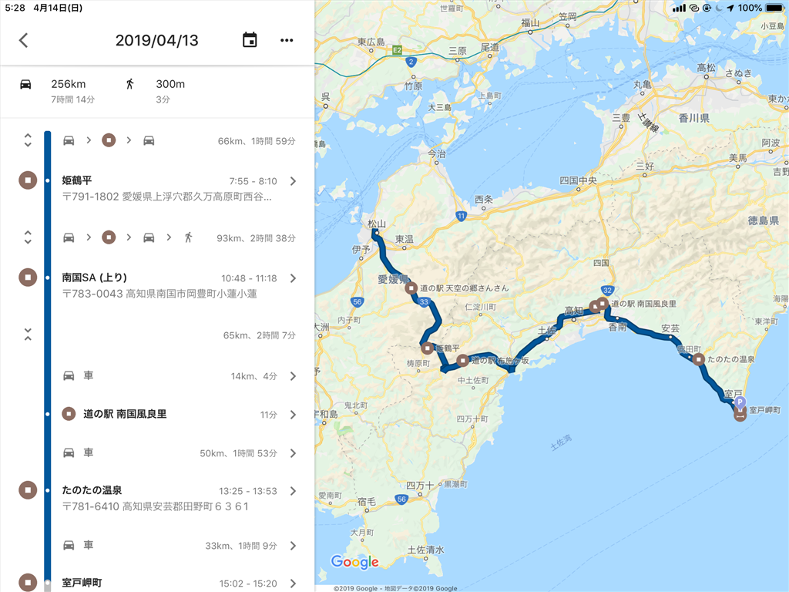
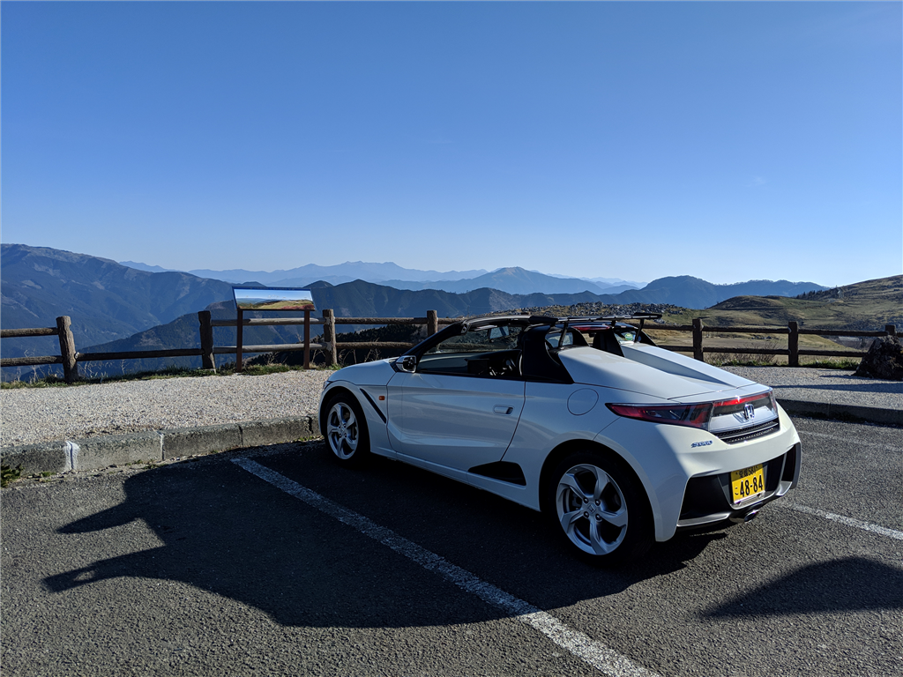
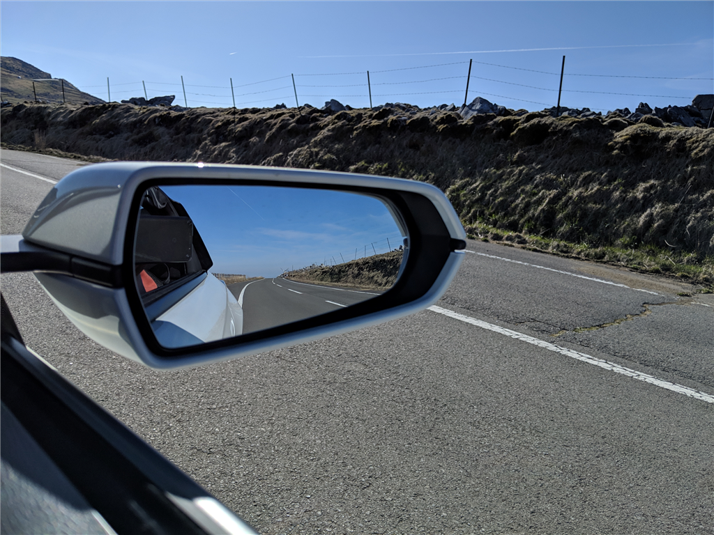
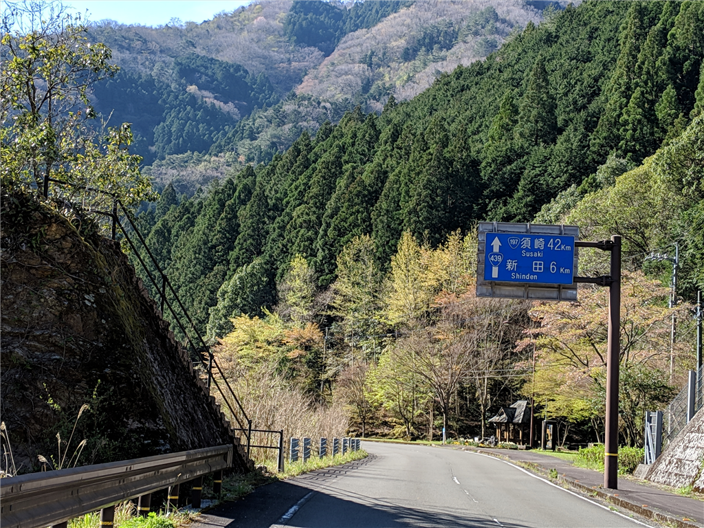
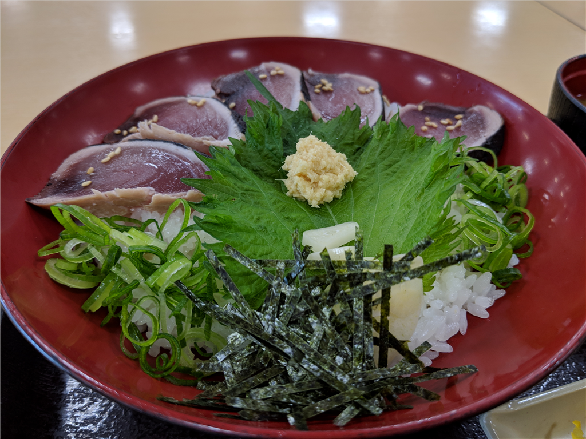
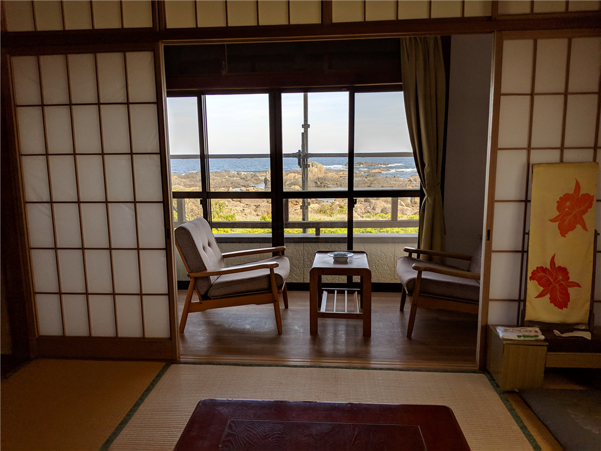
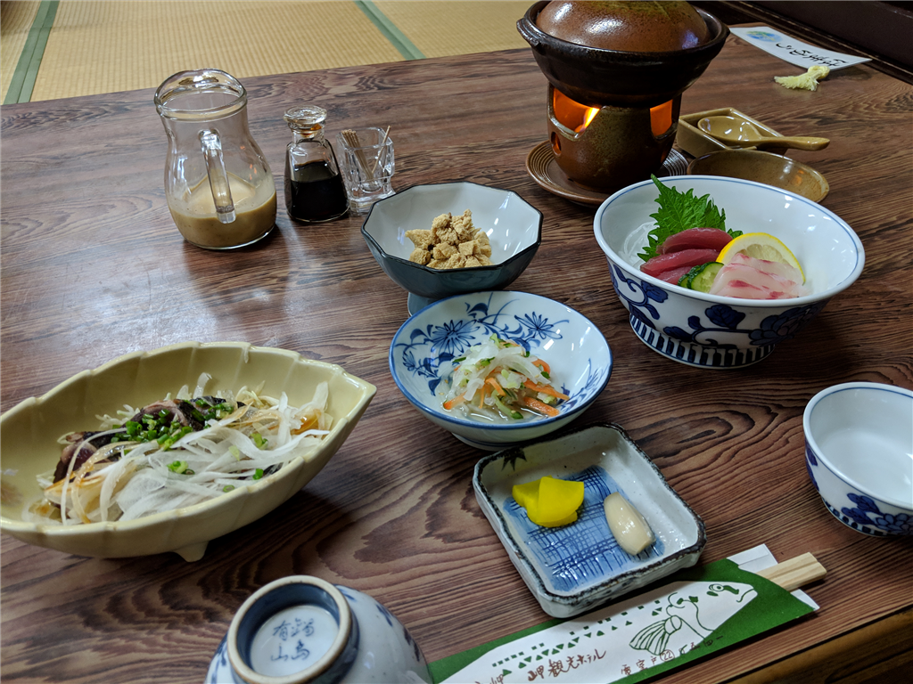

4月13日：四国カルスト～室戸岬
公開日：
実は納車されてから一回もルーフをあけたことがなかっただるカー、こと My S660。本当は GW 進行で遊びに行ってる暇などなかったのですが、「ピコーン！ 気分転換に、旅館にこもって仕事をすればいいんじゃね？」と思い立ち、その日に宿をとって室戸岬に立ち寄りました（なお、結局仕事はしなかった模様）。
初給油
最近、睡眠サイクルが完全に破綻しており、
- 19:00 ～ 24:00 のうち4時間ぐらい
- 翌明け方～昼
の2回に分けて寝るようになっています。睡眠時間の合計では8時間、下手したら10時間寝ているのですが、どうもスッキリしない。その日も、夜中の 1:00 に起きて、ゲームしたり、調べ物をしたりして、朝の 5:00 ごろの出発しました。

当然、こんな時間に出て室戸岬についても宿なぞ開いてるわけがない。そこで四国カルストを経由することにして、松山市から南下していきます。燃料がほとんどないのに、ガソリンスタンドがあいてねぇ……やっとこさ、一軒発見したので、そこで給油しました。だるカー納車後、最初の給油です。燃費は 350.4km / 21.97L ＝ 15.95 km/L で、まぁ、ちょっと悪めかなって感じ。もう少しエコドライブを心掛けねば。
久万高原 → 四国カルスト
久万高原町には初めて行ったのですが、マジで高原なんだな。気温は 1℃ にまで下がり、ヒーターがあるとはいえ、防寒具なしのオープンカーはかなり厳しかった。S660 ってシートヒーターがないんだなぁ……。
濃い霧の中、国道33号線を捨て、細い峠道に。だんだん道が険しくなって、すれ違いが困難な状況に……幸い早い時間だったせいか、対向車は1台だけで、それもこっちが広いところで待機して無事すれ違いができましたが、少し広いところに出るたびに木々の間、ミラーの端に対向車がいないことを確認してダッシュ！――というのを繰り返していたので割と疲れました。何回シフトチェンジしたろう？（笑

でもその甲斐あって、素晴らしい光景を目にすることができました。

今度はバイクできたいですね！ キャンプでもしようかしら？
国道439号 → 国道197号 ～ 国道55号 → 室戸岬
普段ならお眠の時間なのですが、気張って運転。須崎へでて、高知道に乗り、室戸岬を目指します。途中、「酷い道（こくどう）」とも呼ばれる 439号線 も通ったのですが、幸い、この区間はマシな部類だったみたい。愛媛側よりも峠はヌルく、車で行くならこっちからの方がいいなと思いました。

そのあとは、国道197号（行くな）へスイッチ。須崎の町でご飯食べられないかなぁと迷子になったり、「高知道よりも下道だよな」と謎の県道に足を踏み入れたら、途中から落ち葉だらけ（← 昨秋から誰も足踏み入れてないのか！？）のクッソ狭い道にはまりかけて引き返したりと、アドベンチャーを楽しみました。――小ぶりな S660 じゃなかったら延々とバックして転回するの、厳しかったかもしれない。

ほんとは高知でいいご飯を食べたかったのですが、探すのが面倒になり、南国 SA で普通のカツオ丼を食べて落ち着きました。
I'm at たのたの温泉 in 田野町, 高知県 https://t.co/3mw5ihSOUR pic.twitter.com/RV8QL9OaOR
— ジェンダーフリーやなぎ (@daruyanagi) April 13, 2019
ついでに、奈半利のあたりでお風呂にも入りました。介護施設併設の銭湯で、湯上りに畳の上でゴロゴロできなかった＆露天風呂がない以外は、まぁまぁ、よかったです。寝風呂でずっとゴロゴロしたった。
室戸岬＆岬観光ホテル
I'm at 中岡慎太郎像 in 室戸市, 高知県 https://t.co/o0CpD6Y8J9 pic.twitter.com/NSFOafaKDN
— ジェンダーフリーやなぎ (@daruyanagi) April 13, 2019
14:30頃、室戸岬到着。でっかい中岡慎太郎の像が立ってました。
室戸岬ってこんな感じやったんか。イメージと違うな pic.twitter.com/sxPhfr1pyS
— ジェンダーフリーやなぎ (@daruyanagi) April 13, 2019
室戸岬ってもっと海岸に突き出て、切り立った崖のようなのを想像していたのですが、割とまるっとポッコリ、海岸には岩がゴロゴロしていて、イメージと違うところでした。岩に座ってしばしぼーっとする。
もうホテルにしけこんでビール飲んで、お昼寝したい気分でいっぱいだったので、今日の活動はここで終了！ って感じだったのですが、@shibayan が展望台はぜひ見ておけというので、スカイラインをたどって山頂へ上ってきました。めっちゃ高いところを走るので、金玉がひゅんひゅんしました。
完全にはめられた気分や pic.twitter.com/JmieWL7l1u
— ジェンダーフリーやなぎ (@daruyanagi) April 13, 2019
山頂の展望台は景色もさることながら、ネコがたくさんいてよかったです。
室戸猫 pic.twitter.com/KTaFD0hKQz
— ジェンダーフリーやなぎ (@daruyanagi) April 13, 2019
15:00 過ぎ、ようやく宿に到着。
見かけほど中身はヤバくない (@ 岬観光ホテル in 室戸市, 高知県) https://t.co/yEQumyd8vU pic.twitter.com/nWPMdDN1Bn
— ジェンダーフリーやなぎ (@daruyanagi) April 13, 2019
足場の残った古い建物で、若干不安になりましたが、なかは落ち着いた和風旅館といった面持ちで好きです。この辺りは台風が大変なので、古い建物のメンテナンスは大変でしょうね（案内された新館の方ですら、昭和30年代の建築との由）。

おかみさんは気さくな方で。ちょっとしたミスはあったけど（出されたお茶がお湯だったｗｗｗ）、むしろそこが笑いのツボになってしまった。ごはんも地元でとれたお米に、小夏というこの時期に取れるミカンなどを出してもらって、大変満足でした。どうしようかな、今日は一日雨みたいだし、延泊してゴロゴロ、じゃない、仕事をしようかなという気にもなっています。

おまけ
もやしなので、オープンカーで一日走っただけで日焼けした pic.twitter.com/9cMEydjwB2
— ジェンダーフリーやなぎ (@daruyanagi) April 13, 2019